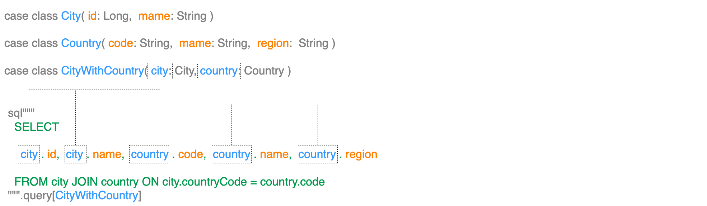

Selecting Data
Now that we've learned about Parameterized Queries, let's look at how to retrieve data in various formats. This page explains how to efficiently fetch data using SELECT queries and map them to Scala types.
One of ldbc's most powerful features is its ability to easily map database results to Scala types. It can handle various data formats, from simple primitive types to complex case classes.
Basic Data Retrieval Workflow
The basic flow for retrieving data with ldbc is as follows:
- Create an SQL query with the
sqlinterpolator - Specify the result type with
.query[T] - Convert results to a collection with
.to[Collection](optional) - Execute the query using
.readOnly()/.commit()/.transaction(), etc. - Process the results
Let's look at this flow along with the type transformations in code.
Reading Rows into Collections
In our first query, let's look at an example that retrieves some usernames into a list and outputs them. We'll show how the types change at each step:
sql"SELECT name FROM user"
.query[String] // Query[String]
.to[List] // DBIO[List[String]]
.readOnly(conn) // IO[List[String]]
.unsafeRunSync() // List[String]
.foreach(println) // UnitLet's explain this code in detail:
sql"SELECT name FROM user"- Defines the SQL query..query[String]- Maps each row result to aStringtype. This generates aQuery[String]type..to[List]- Aggregates the results into aList. This generates aDBIO[List[String]]type. This method can be used with any collection type that implementsFactoryCompat(such asList,Vector,Set, etc.)..readOnly(conn)- Executes the query using the connection in read-only mode. The return value isIO[List[String]]..unsafeRunSync()- Executes the IO monad to get the actual result (List[String])..foreach(println)- Outputs each element of the result.
Multiple Column Queries
Of course, you can select multiple columns and map them to tuples:
sql"SELECT name, email FROM user"
.query[(String, String)] // Query[(String, String)]
.to[List] // DBIO[List[(String, String)]]
.readOnly(conn) // IO[List[(String, String)]]
.unsafeRunSync() // List[(String, String)]
.foreach { case (name, email) => println(s"Name: $name, Email: $email") }In multiple column queries, it's important that the order of selected columns matches the order of type parameters in the tuple. In the above example, name corresponds to the 1st column (tuple's _1), and email to the 2nd column (tuple's _2).
Mapping to Case Classes
While tuples are convenient, we recommend using case classes to improve code readability. ldbc can automatically map query results to case classes:
// Case class representing user information
case class User(id: Long, name: String, email: String)
// Query execution and mapping
sql"SELECT id, name, email FROM user"
.query[User] // Query[User]
.to[List] // DBIO[List[User]]
.readOnly(conn) // IO[List[User]]
.unsafeRunSync() // List[User]
.foreach(user => println(s"ID: ${user.id}, Name: ${user.name}, Email: ${user.email}"))Important: The field names in the case class need to match the column names selected in the SQL query. The order also needs to match, but ldbc will map appropriately if the names match exactly.
Joining Multiple Tables and Nested Case Classes
When retrieving data from multiple tables using JOIN, you can map to nested case class structures. In the following example, we join the city and country tables and map the result to a CityWithCountry class:
// Case class representing a city
case class City(id: Long, name: String)
// Case class representing a country
case class Country(code: String, name: String, region: String)
// Case class combining city and country information
case class CityWithCountry(city: City, country: Country)
// Executing a join query
sql"""
SELECT
city.id,
city.name,
country.code,
country.name,
country.region
FROM city
JOIN country ON city.country_code = country.code
"""
.query[CityWithCountry] // Query[CityWithCountry]
.to[List] // DBIO[List[CityWithCountry]]
.readOnly(conn) // IO[List[CityWithCountry]]
.unsafeRunSync() // List[CityWithCountry]
.foreach(cityWithCountry => println(
s"City: ${cityWithCountry.city.name}, Country: ${cityWithCountry.country.name}"
))A feature of ldbc is that columns specified in the format table_name.column_name are automatically mapped to class_name.field_name. This enables the following mappings in the above example:
city.id→CityWithCountry.city.idcity.name→CityWithCountry.city.namecountry.code→CityWithCountry.country.codecountry.name→CityWithCountry.country.namecountry.region→CityWithCountry.country.region

Using Tuples for Join Queries
Instead of nested case classes, you can also use tuples to retrieve data from multiple tables:
case class City(id: Long, name: String)
case class Country(code: String, name: String, region: String)
sql"""
SELECT
city.id,
city.name,
country.code,
country.name,
country.region
FROM city
JOIN country ON city.country_code = country.code
"""
.query[(City, Country)] // Query[(City, Country)]
.to[List] // DBIO[List[(City, Country)]]
.readOnly(conn) // IO[List[(City, Country)]]
.unsafeRunSync() // List[(City, Country)]
.foreach { case (city, country) =>
println(s"City: ${city.name}, Country: ${country.name}")
}It's important to note that when using tuples, the table name and the case class name need to match. That is, the city table is mapped to the City class, and the country table is mapped to the Country class.
Table Aliases and Mapping
When using aliases for tables in SQL statements, you need to match the case class name with that alias:
// Case class names matching alias names
case class C(id: Long, name: String)
case class CT(code: String, name: String, region: String)
sql"""
SELECT
c.id,
c.name,
ct.code,
ct.name,
ct.region
FROM city AS c
JOIN country AS ct ON c.country_code = ct.code
"""
.query[(C, CT)] // Query[(C, CT)]
.to[List] // DBIO[List[(C, CT)]]
.readOnly(conn) // IO[List[(C, CT)]]
.unsafeRunSync() // List[(C, CT)]
.foreach { case (city, country) =>
println(s"City: ${city.name}, Country: ${country.name}")
}Getting a Single Result (Option Type)
If you want to get a single result or an optional result (0 or 1 record) instead of a list, you can use .to[Option]:
case class User(id: Long, name: String, email: String)
// Searching for a single user by ID
sql"SELECT id, name, email FROM user WHERE id = ${userId}"
.query[User] // Query[User]
.to[Option] // DBIO[Option[User]]
.readOnly(conn) // IO[Option[User]]
.unsafeRunSync() // Option[User]
.foreach(user => println(s"Found user: ${user.name}"))If no result is found, None is returned, and if one is found, Some(User(...)) is returned.
Choosing Query Execution Methods
ldbc provides different query execution methods depending on the purpose:
.readOnly(conn)- Used for read-only operations (such as SELECT statements).commit(conn)- Executes write operations in auto-commit mode.rollback(conn)- Executes write operations and always rolls back (for testing).transaction(conn)- Executes operations within a transaction and commits only on success
// Example of a read-only operation
sql"SELECT * FROM users"
.query[User]
.to[List]
.readOnly(conn)
// Example of a write operation (auto-commit)
sql"UPDATE users SET name = ${newName} WHERE id = ${userId}"
.update
.commit(conn)
// Multiple operations in a transaction
(for {
userId <- sql"INSERT INTO users (name, email) VALUES (${name}, ${email})".returning[Long]
_ <- sql"INSERT INTO user_roles (user_id, role_id) VALUES (${userId}, ${roleId})".update
} yield userId).transaction(conn)Combining Collection Operations with Queries
By applying Scala collection operations to retrieved data, you can concisely describe more complex data processing:
// Example of grouping users
sql"SELECT id, name, department FROM employees"
.query[(Long, String, String)] // ID, name, department
.to[List]
.readOnly(conn)
.unsafeRunSync()
.groupBy(_._3) // Group by department
.map { case (department, employees) =>
(department, employees.map(_._2)) // Map to department name and list of employee names
}
.foreach { case (department, names) =>
println(s"Department: $department, Employees: ${names.mkString(", ")}")
}Summary
ldbc provides features for retrieving data from databases in a type-safe and intuitive manner. In this tutorial, we covered:
- The basic workflow for data retrieval
- Single-column and multi-column queries
- Mapping to case classes
- Joining multiple tables and nested data structures
- Getting single and multiple results
- Various execution methods
Use this knowledge to efficiently retrieve data from databases in your applications and maximize the benefits of Scala's type system.
Next Steps
Now that you understand how to retrieve data from databases in various formats, you've seen how type-safe mapping allows you to map database results directly to Scala data structures.
Next, let's move on to Updating Data to learn how to insert, update, and delete data.